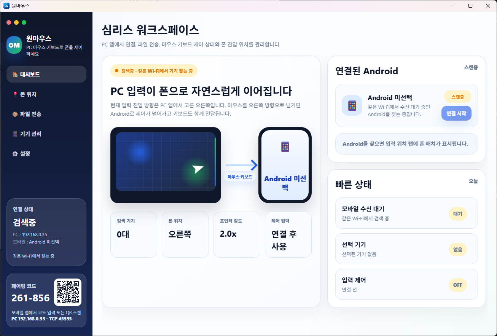

QR or 6-digit pairing
Use the QR code or 6-digit code shown at the bottom of the PC app to pair the Android device.
Updated for May 2026
OneMouse lets you use your PC mouse, keyboard, clipboard, and files with Android. It finds your PC on the same Wi-Fi or LAN using mDNS first, with UDP fallback when needed.
What Changed
The current flow is power, permissions, device discovery, pairing, phone placement, and input handoff. Wi-Fi/LAN is the main path. USB/ADB is treated as an emergency or secondary path.
Use the QR code or 6-digit code shown at the bottom of the PC app to pair the Android device.
Run device search from the app. mDNS is tried first, and UDP fallback helps when the network blocks mDNS.
The Android power button turns the OneMouse runtime on or off, including discovery and input receivers.
Drop files onto the small PC drop zone to send them to the selected Android device. Move the zone anywhere and toggle it with Ctrl + Alt + D.
Open Android battery optimization settings from the app when the connection drops after the screen turns off.
OneMouse Pro is handled through Google Play Billing in the Android app.
If the cursor does not return from Android, press Ctrl + Alt + Backspace on the PC.
Product Flow
You do not need to manage ports or transports manually. Follow the screens in the PC and Android apps.
Detect PCs on the same local network with mDNS and UDP fallback.
Enable Accessibility first, then pair with a QR scan or 6-digit code.
Choose the PC screen edge where the Android device should be entered.
Mouse, keyboard, and clipboard move between devices. PC files can be sent from the transfer screen or the Quick Drop zone.
Demo
The demo shows the real app flow: PC launch, Android permissions, pairing, placement, and input handoff.
Screens
Turn on OneMouse, check permissions, find the PC, pair with QR or code, place Android on a PC screen edge, then move the cursor across that edge.



Connection Paths
OneMouse works on the same local network. Guest Wi-Fi, AP isolation, company networks, or firewalls can block discovery or direct connection.
Free / Pro
Free keeps the core connection and input flow. Pro removes ads and repeated-use limits for transfer and device switching.
Download
Android 8.0 or later is targeted. Windows 10 and Windows 11 are the primary PC environments.
Checking the latest setup file.
Download WindowsEnable Accessibility and notification permission, then pair with your PC.
Get Android